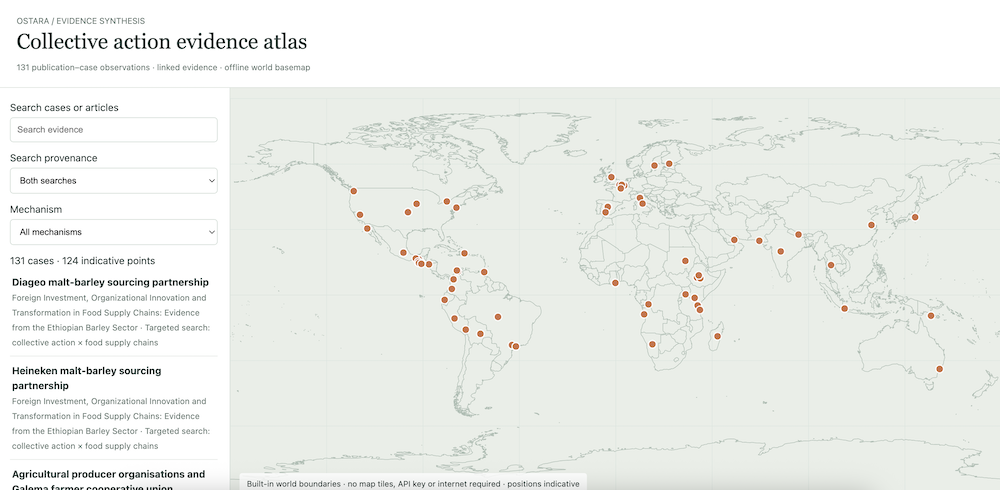
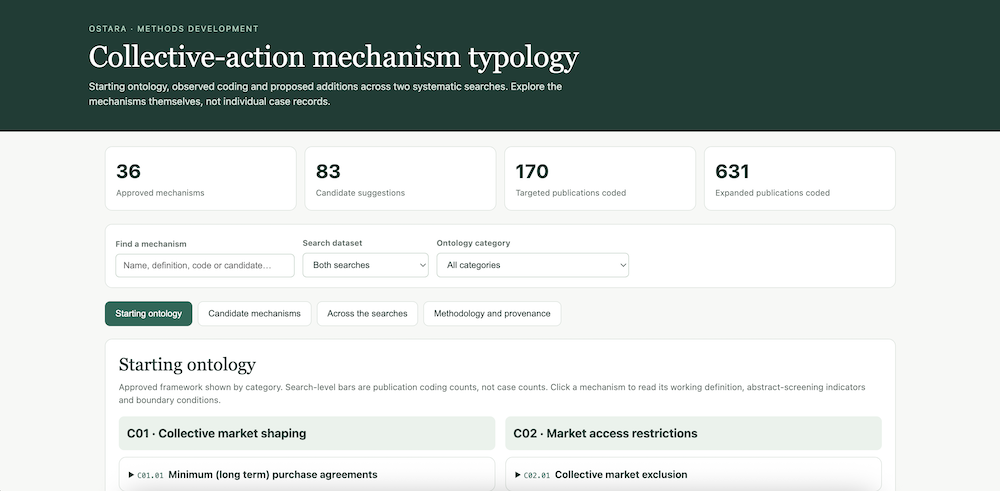

Evidence atlas
Explore the evidence atlas and its mapped cases. 
Provisional outputs and model instructions used across abstract screening, mechanism detection, case discovery, full-text extraction and case eligibility.
Explore the evidence atlas and its mapped cases. 
Explore the collective-action mechanism typology. 
Does the record discuss collective action for sustainability?
Read prompt →What mechanisms (if any) are mentioned in abstracts?
Read prompt →The ontology used to code abstracts on mechanisms.
View ontology →Does the abstract reference a likely case?
Read prompt →For full texts with cases, extract descriptive data and evidence.
Read prompt →One row per case data extraction schema.
View data schema →Reassess all ontology codes and new candidate mechanisms with evidence.
Read prompt →Data extraction schema from full texts for mechanisms ontology.
View data schema →Reassessment of evidence on case presence at full text level.
Read prompt →